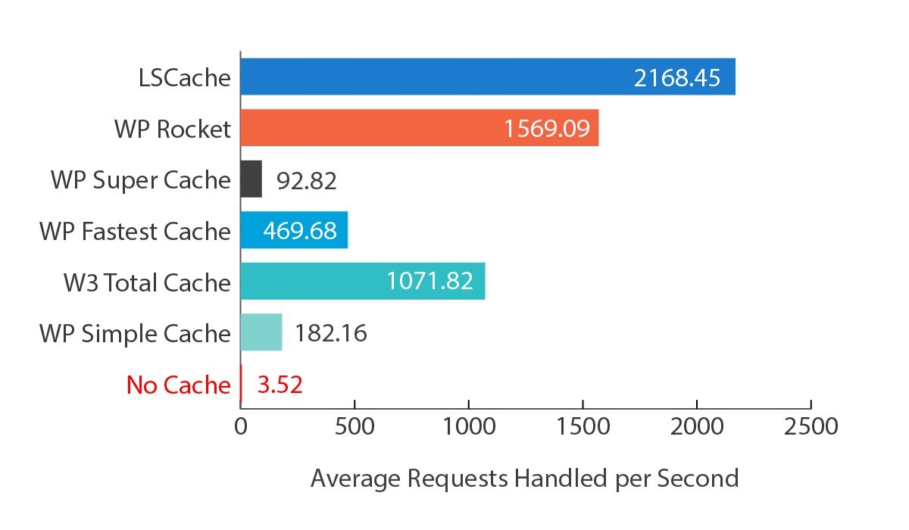

自宅サーバに適用する構成について、最近のWebアプリ周りのサーバ側事情を調査していました。
まず、このブログを宅内で動作させるには WordPress を動作させることが必要です。で、その構成をどうするか検討することにします。以下のようなことを考えないといけないですね。
OS：Linux で動作させますが、どのディストロビューション
（CentOS とか Fedora とか ubuntuとか）にするか？
Web：NGINX とか apache とか。
PHP：PHP7 とか HHVM とか。またはその動作方法php_fpm とか、mod_php とか。
データベース：MariaDB とか、MySQL とか。
また以下の点については、趣味のブログなので作りながら考えていくことにします。
冗長性：これは当面、１台動作で考えないことにします。落ちたら、なるはやで復旧。
運用監視：外部監視をどうするか？
バックアップ：どっかにデータをバックアップしないとです。
保守：マシンが壊れた時、または停電時など。
めんど臭いですね！（笑）ま、当初からわかっていたことですが改めて書くと考えることが多いです。
で、改めて最新の動向も探りながら、ざっくり検討することにしました。動作させるマシンはもうすでに決定済みで、前回までに決めた Ryzen 5 Pro 3400GE が動作するマシンです。Kernel を最新にしたいということもあり、Fedora かubuntuあたりにしようかと思っています。
肝心の Webサーバは、NGINX + HHVM という構成が有力でしたがどうやら最近は事情が変わっているようです。2013年〜2014年に検討した時、HHVM の高速性にはびっくりしたのが印象的でした。24時間アクセス（vmで2台構成）のベンチマーク耐久テストでも落ちなかったのを覚えています。24時間で、400万PVを達成しました。1秒間に、約46回の処理をした計算になります。ま、その直後は vmホストのSSD がぶっ壊れましたが（笑）しかし、残念なことにHHVM は、今やPHPコードを動作させることができなくなったようです。
RIP WordPress and HHVM – We’ve Had a Good Run
ちょっとショックだったので、オフィシャルサイトのドキュメントも確認しておきました。HHVM v3.30 がPHPサポートの最終とのこと！ 2018/12/17 だって。もう１年以上前か。
Ending PHP Support, and The Future Of Hack
改めて最新の動向を見てみると、どうやら LiteSpeed というWEBサーバのほうが良さそうです。2015年のネタなので現在は状況が変わっているかもしれません。
PHP7 vs HHVM Benchmark Series 1: Hello World
そして、現在は HHVM よりもPHP7 が良い結果が出ているそうなので、LiteSpeed のオープンソース版である OpenLiteSpeed を使うことにしました。とりあえず、以下のような構成でいこうかと。
OS：Linux（Fedora 31 server）
Web：OpenLiteSpeed 1.6.x
PHP：PHP7.x
データベース：MariaDB10.x
WordPress代替：ClassicPress ★代替えの必要があるかちょっと使ってみる
キャッシュ：LiteSpeed Cache WordPress
LiteSpeed のWEBサーバと、WordPress のPlugin であるキャッシュ（LiteSpeed Cache WordPress）は専用設計のようです。そして、このキャッシュはWordPress代替のClassicPressでも動作するようです。
LiteSpeed Cache for WordPress
::
LiteSpeed Cache Works With ClassicPress
LSCache（青いグラフ）がそれみたいですが、速そうですね。

また、OpenLiteSpeed と LiteSpeed との違いは以下に機能比較があります。
OpenLiteSpeed or LiteSpeed Enterprise?
https://www.litespeedtech.com/products/litespeed-web-server/editions
WordPress代替のClassicPress は一度、ローカルに入れて検討してみないとですね。
Get ClassicPress
https://www.classicpress.net/get-classicpress/
ということで、今後の課題が見えてきました。ちょっと目を話すとどんどん状況が変わるからこの業界は面白いんですよね！